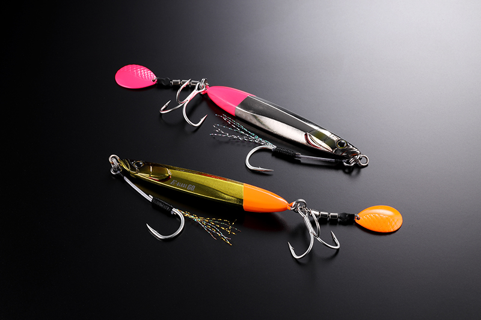
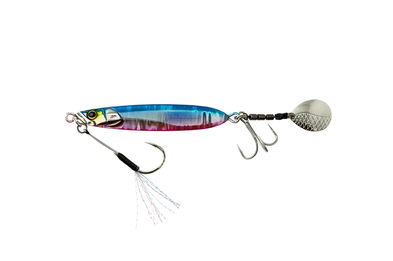
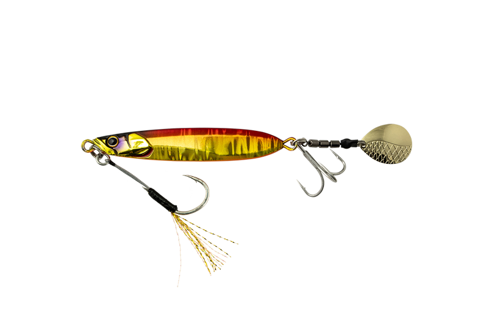
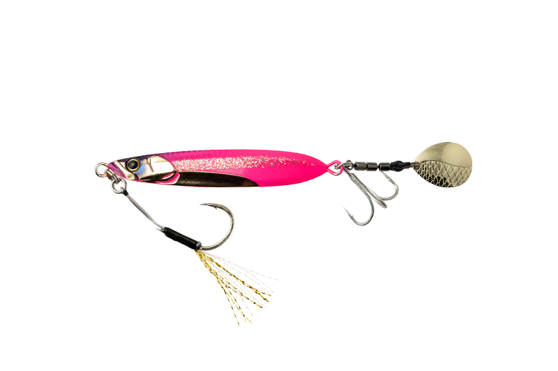
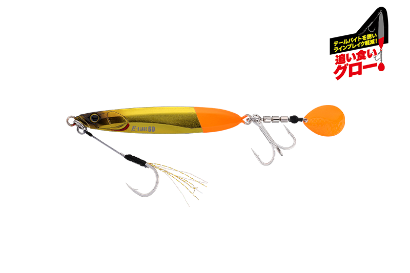
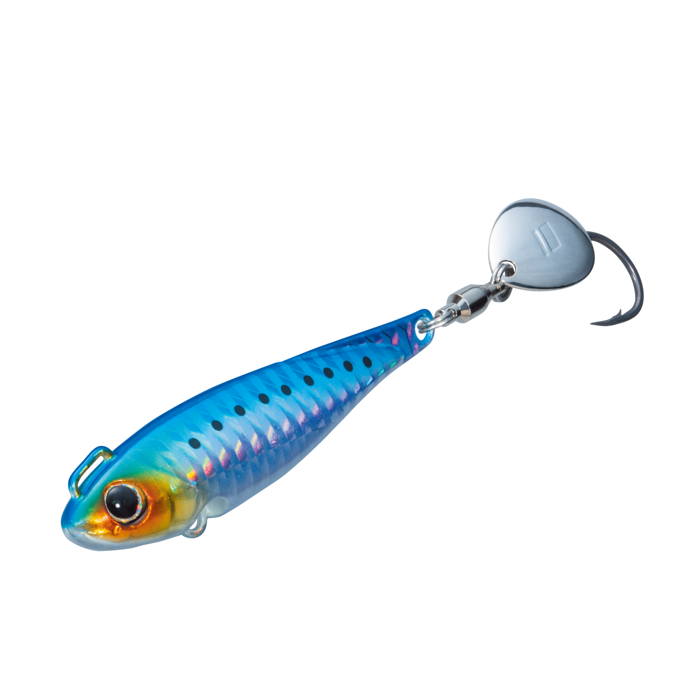

ビッグバッカー Eブレード
（ブレードジグ）
ビッグバッカー Eブレード（BIGBACKER E-BLADE）はJACKALL（ジャッカル）のブレードジグです。
「ただ巻きOKのカンタン操作」がコンセプト。ジャークやシャクリなどの難しい操作は必要なく、ただ巻きだけでオートマチックに釣れるアクションで青物を誘えます。堤防・沖堤防での使用を想定したハイバランス設計で、足場の高い堤防でも足元近くまでレンジをキープできるのが最大の魅力です。

画像出典:ジャッカル公式HP
スペック
- メーカー
- JACKALL（ジャッカル）
- タイプ
- ブレードジグ（シンキング）
- ウエイト
- 7g／10g／15g／20g／30g／40g／60g
- フック
- リア：トレブルフック／フロント：アシストフック（30〜60gはワイヤー内蔵アシストライン）
- ターゲット
- サゴシ・サワラ・ブリ・ツバス・メッキなど
- 価格
- 858円〜1,144円（税込）
▼今すぐチェック
ビッグバッカー Eブレードの特徴
ただ巻きだけで釣れる、堤防青物のためのハイバランスなブレードジグ
-
ハイバランス設計で足元までレンジキープ
ボディ・ブレード・アイ・フックなどすべての要素でバランスを追究。低速から高速巻きまで安定した姿勢を保ち、狙ったレンジを外しにくい。足場の高い堤防でも足元近くまで巻き続けられる。
-
止めてもブレードが回り続ける
フリーフォール・テンションフォール中もブレードがしっかり回転し続ける。ただ巻きの後に「止め」を入れてもブレードが誘い続けるので、魚に見切る隙を与えずバイトに持ち込める。
-
サゴシ対応のワイヤー内蔵アシストライン
30〜60gには、サゴシ・サワラ・タチウオなど鋭い歯を持つ魚による切断を防ぐワイヤー内蔵アシストラインを採用。ブリ狙いの最中にサゴシが回ってきても、アシストフックを替えずに対応できる。
ビッグバッカー Eブレードの使い方
基本はキャストして狙いのレンジまで沈め、ただ巻きで探る。低速から高速まで姿勢が安定しているので、巻きスピードを変えながら反応の良い速さを探していく。
反応がない時は、ただ巻きの途中に「止め」を入れてフォールさせるのが有効。フォール中もブレードが回り続けるので、追ってきた魚に食わせの間を作れます。
ビッグバッカー Eブレードの得意な状況
堤防や沖堤防から、サゴシ・サワラ・ブリなどの青物を狙う状況が最大の出番。
7〜20gはエギングロッドやシーバスロッドで扱いやすく、メッキやツバスなど小型〜中型の回遊魚にぴったり。難しい操作が要らないので、ブレードジグをこれから始める人にもオススメの1本です。
ワンポイント
最適なアクションを出すため、アイは角度調整された状態で出荷されています。開封時のまま使いましょう。
サワラ狙いなら、テール側にバイトを誘導してラインブレイクを減らす2026年の新色「追イ食イグロー」も試してみてください。
Eブレードのウエイトの使い分け
| ウエイト | 価格（税込） | 得意な場面 |
|---|---|---|
| 7g | 858円 | ライトタックルでメッキ・小型回遊魚 |
| 10g | 902円 | エギングロッドでツバス・ショゴ |
| 15g | 946円 | シーバスロッドで小型〜中型の青物 |
| 20g | 990円 | ライトタックルで少し遠くを狙いたい時 |
| 30g | 1,034円 | ショアジギングタックルの基準ウエイト |
| 40g | 1,078円 | 飛距離が欲しい時・水深のある堤防 |
| 60g | 1,144円 | 潮の速いエリア・遠くのナブラ |
30〜60gはショアジギングタックル向けで、ブリやサワラなど中型〜大型の回遊魚に対応。7〜20gはエギングロッドやシーバスロッドなどのライトなタックルで扱いやすく、メッキやツバス、ショゴなど小型〜中型の回遊魚にぴったりの一口サイズだ。
オススメカラー
ビッグバッカー Eブレードは豊富なカラーを展開。オススメのカラーを厳選して紹介します。

ブルピン青物狙いの定番ブルーピンク。迷ったらまず投げたい1色。

アカキン濁りやローライトに強いアカキン。朝夕マズメや濁った日に。

超サゴシピンクスパークサゴシ狙いのピンク系アピールカラー。日中の澄み潮でも存在感を出せる。

追イ食イオレンジグロー2026年の新色。テールとブレードのグローでサワラのバイトを後方へ誘導し、ラインブレイクを減らす。
画像出典:ジャッカル公式HP
ビッグバッカー Eブレードに似ているルアー
-
 ジャックアイマキマキ
ハヤブサ
詳細はこちら＞
ジャックアイマキマキ
ハヤブサ
詳細はこちら＞
ホロ貼りブレード付きのただ巻き専用ジグ。ただ巻きだけで誘える手軽さが、Eブレードと共通する。
-
 Zブレード
ジーク
詳細はこちら＞
Zブレード
ジーク
詳細はこちら＞
亜鉛合金ボディのブレードジグ。ゆっくりしたフォールで見せたい時の持ち替え候補になる。
-

ボンバースピン メジャークラフト 詳細はこちら＞超スピード巻きでもブレない実釣主義のサワラジグ。高速巻きでサワラ・サゴシを狙う時に使い分けたい1本。